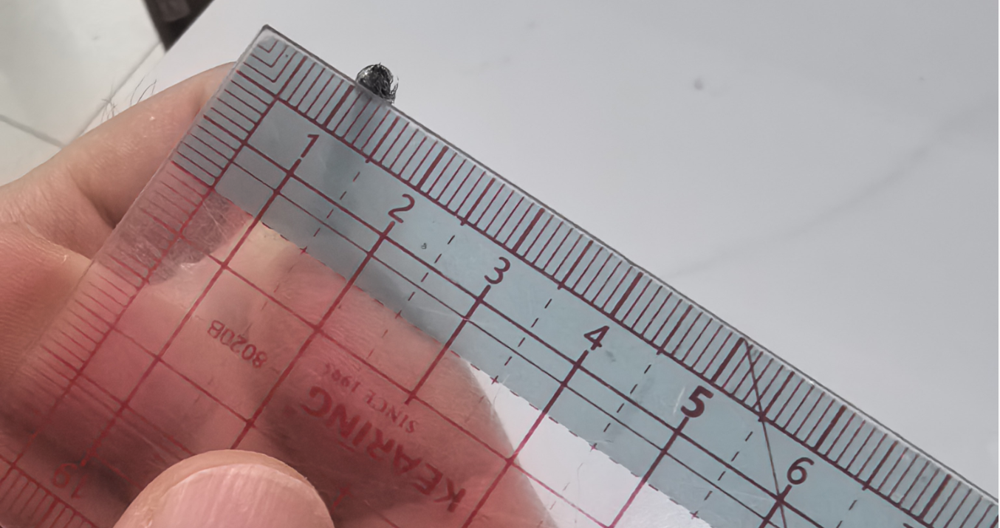
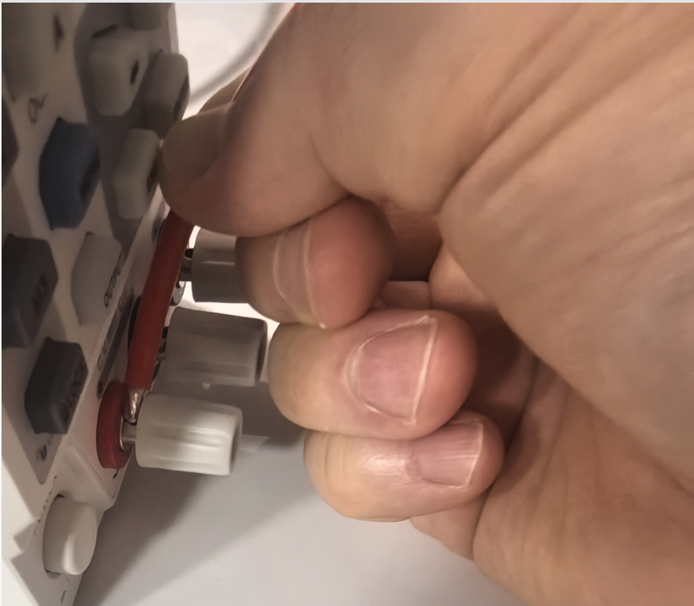

不需要"灯笼头", 不需要子弹头, 直接拧
UDP6730 前面板右下角的红色 (+) 和 黑色 (−) 两个圆形端子, 就是输出端口. 黄色虚线框圈出来的那两个.
右边的绿色 GND 是接地端子, 鸭子项目不接.
接下来我们放大看这两个红黑端子的内部结构.
UDP6730 的红/黑输出端子是"4mm 香蕉孔 + 接线柱"二合一结构 (业内俗称 Binding Post), 不是单纯的香蕉孔.
所以"裸线接入"是这个端子的原生设计用法, 不是 hack.
像拧矿泉水瓶盖那样, 逆时针拧外圈塑料螺帽 (红端子拧红的, 黑端子拧黑的).
不要拧到完全脱开 —— 螺帽只需向上"升起" 3-5 mm, 横孔露出来即可. 拧太多容易掉.
这时金属杆侧面会露出一个直径约 3 mm 的小孔, 那就是穿裸线用的横孔.
用剥线钳剥掉 12 AWG 硅胶线末端 约 8-10 mm 的硅胶皮, 露出整齐的铜丝.
把裸铜从右侧水平塞进金属杆的横孔, 推到底, 铜丝应该贯穿整个杆 (另一侧露出一点点是正常的).
极性不能反. 接反了打开 OUTPUT 瞬间会击穿鸭子.
⚠ 2026-05-19 实测打脸: 用户实测剥皮后的 12 AWG 多股硅胶线无法直接塞入 UDP6730 横孔——绞合后裸铜外径约 3.0-3.5 mm, 横孔孔径疑似 < 3 mm. 直接走方案 C (VE6-12 针型端子) 是当前唯一已知可靠的方法, 跳过方案 A.


方案 A / 方案 C 任选一种. 横孔 3-4 mm, 12 AWG 多股软线裸铜约 2.5-2.8 mm, 物理上能进去但易散开.
2026-05-19 降级: 镀锡只能让铜丝不散开, 但不能让直径变小(锡层覆盖时甚至略增). 用户实测裸 12 AWG 已经塞不进横孔, 镀锡后大概率仍塞不进. 用游标卡尺量过横孔 ≥3.5 mm 才考虑这个方案.
步骤(横孔够大时): 剥皮 8mm → 烙铁加热到 ~350℃ → 用焊锡丝在裸铜段挂一层薄锡 → 所有细铜丝熔成一根实心 ~2.7mm 圆柱 → 穿入横孔.
关键: 锡熔化时要快进快出, 锡量适中. 锡太多会鼓出来, 反而塞不进横孔; 锡太少铜丝还会冒出.
2026-05-19 升为主推: VE6-12 针部分是 标准化 ~2.5 mm 实心圆柱, 业界专门设计就是塞 3 mm 左右的接线柱横孔. UDP6730 横孔再小, < 2.5 mm 的可能性极低. 这是当前唯一已知可靠的方案.
步骤: 12 AWG 末端套上 VE6-12 黄色针型端子 (6mm² 套筒能容 12 AWG 多股铜) → 用棘轮冷压钳压紧 (4-5 个压痕) → 把针端插入横孔 → 拧紧螺帽.
端子型号: 找 VE6-12 或 VE6012, 含义 = "6mm² 套筒 + 12mm 总长 + 黄色绝缘". 也叫"针型管型端子" / "欧式针型端子".
把彩色螺帽顺时针拧回原位, 螺帽底部会把裸铜夹紧在金属杆肩部, 形成大面积金属对金属接触.
验证夹紧: 用中等力度拽线 (约 2-3 公斤拉力), 线不脱出即为夹紧成功. 拽不动 = OK.
另一根线 (黑色, 接黑色端子) 重复 Step 1-3.
两根都接好后, 按 cheatsheet §4 走空载验机流程: 万用表 V⎓ 档测红黑端子, 应显示 +12.00 V.
配套文档: docs/udp6730-quickstart-cheatsheet.md §0-§5